교통기사 (2004-03-07 기출문제)
1과목: 교통계획
1. 주차시설 현황을 조사할때 조사시간중에 주차구역내 주차 1면당 평균 주차차량수를 나타내는 지표는?
- 평균점유율
- 평균회전율
- 평균주차집적율
- 평균주차율
(정답률: 64%)

2. 조사지역내에 하나 또는 몇개의 선을 그어 이선을 통과하는 차량을 조사하여 표본 O-D조사에 의한 전수화 O-D자료를 검증하거나 보완하기 위해 실시하는 방법은 무엇인가?
- 스크린 라인 조사(Screen Line Survey)
- 폐쇄선 조사(Cordon Line Survey)
- 노측면접조사(Road Side Interview Survey)
- 차량 번호판 조사(License Plate Survey)
(정답률: 93%)
3. 특정 대중교통 수단의 가격의 변화에 따른 수요의 탄력성이 1 미만이라 가정할 경우, 요금인상이 전체 수입에 미치는 효과는?
- 요금 인상 후 전체 수입은 증가 한다.
- 요금 인상 후 전체 수입은 감소 한다.
- 요금 인상 정도에 관계없이 전체 수입은 변화가 없다.
- 요금 인상의 정도에 따라 전체 수입은 증가, 또는 감소한다.
(정답률: 90%)
4. 도심교통수요의 억제정책으로 적합하지 않은 것은?
- 대중교통수단 육성
- 자가용 통행금지구역 확대
- 보행자 전용도로 건설
- 주차장 건설
(정답률: 92%)
5. 교통체계관리(TSM)기법의 특성으로 옳지 않은 것은?
- 저투자비용
- 단기적인 편익
- 시설지향적
- 기존시설의 효율적이용
(정답률: 알수없음)
6. 30∼50만명인 도시의 가구방문 조사의 최소 표본율로 가장 적당한 것은?
- 2%
- 5%
- 10%
- 15%
(정답률: 알수없음)
7. 계획목표를 미리세워놓고, 그 목표(Goal)를 달성하기 위한 모든 조건과 수단을 조사, 분석하여 추진하는 이상적인 계획 개념은?
- 개별적 점진주의(Disjointed Incrementalism)
- 선별적 합리주의(Mixed Scanning)
- 종합적 합리주의(Synoptic Rationalism)
- 참여주의(Advocacy Planning)
(정답률: 알수없음)
8. 교통수단선택을 위하여 로짓모형을 활용할 때에 효용함수가 U = αx(통행시간) + βx(통행비용)으로 표시될 경우 통행시간가치는 어떻게 표현되는가?
- │ α-β │
- α · β
- α/β
- α+β
(정답률: 알수없음)
9. 도시교통계획 수립시 가구조사를 위하여 표본크기를 결정할 때 고려사항이 아닌 것은?
- 연구목적 및 자료의 용도
- 통계적인 정확도
- 전수화방법
- 연구 범위내의 인구
(정답률: 알수없음)
10. 주차수요 추정방법중 P요소법에 관한 설명으로 틀린 것은?
- 사람통행을 기본대상으로 차량의 평균승차 인원을 고려하여 주차수요를 추정하는 방법이다.
- 주차수요는 피크시승용차 도착통행량과 주차장 용적율 및 이용효율등의 변수에 따라 변화한다는 전제하에 정립된 방법이다.
- 지역적 특성을 고려할 수 없는 단점이 있다.
- 지구나 도심지와 같은 특정한 장소의 주차수요 예측에 적합한 방법이다.
(정답률: 알수없음)
11. 시내백화점들의 주차특성을 조사한 결과 주차발생 원단위가 5.5(대/1000m2/시), 주차이용율이 85%, 신축후 주차대수의 연평균 증가율이 3%로 나타났다. 신축예정인 어느 백화점의 건물연면적(상면적)이 22,350m2일때 목표년도(5년후)의 주차수요를 원단위법에 의해 산출한 값은?
- 131대
- 152대
- 145대
- 168대
(정답률: 알수없음)
12. 다음 중 통행의 기종점이 모두 연구대상 지역의 바깥지점에 위치하는 교통은?
- 역내 교통
- 역외 교통
- 유입 교통
- 통과 교통
(정답률: 59%)
13. 교통수요 추정 4단계 모형 중 통행분포(trip-distribution)에 사용되고 있는 모형이 아닌 것은?
- 중력모형(Gravity model)
- 회귀분석법(Regression analysis)
- 프라타모형(Fratar model)
- 간섭기회모형(Intervening opportunity model)
(정답률: 알수없음)
14. 다음의 교통수요 모형중 통행유출량(trip production)을 산출하기 위해 사용될 수 있는 모형은?
- 전환곡선방법
- 카테고리분석법
- 간섭기회모형
- 용량제약법
(정답률: 알수없음)
15. 지하철 요금에 대한 버스수요의 교차탄력성이 0.01이라고 한다. 현재 어느 한 구간의 하루 버스 이용객은 12,000명 이라고 하며 지하철 요금은 250원, 버스요금은 210원이다. 지하철 공사에서 이 구간의 지하철 요금을 250원에서 300원으로 인상할 경우 버스의 수요를 교차탄력성을 이용하여 구하면 얼마인가?
- 12,120명
- 11,880명
- 12,024명
- 11,976명
(정답률: 알수없음)
16. 직접수요 모형의 특성을 바르게 설명한 것은?
- 교통량을 교차탄력성을 고려치 않고 직접탄력성만을 고려하여 구하는 교통수요모형
- 통행자의 행태를 기준으로 4단계의 구조를 갖는 모형
- 통행의 발생 및 목적지, 수단 그리고 노선등을 단일식을 이용하여 동시적으로 예측하는 교통 수요모형
- 각 가정의 통행자 행태를 직접 조사하여 교통 수요를 산출하는 교통수요모형
(정답률: 알수없음)
17. 아래의 도면과 같은 노선망에 1000대의 차량이 교통존 ①에서 교통존 ②까지 가고자 한다. 통행시간(T)은 통행량(V)의 함수로 도면에서와 같이 주어졌다고 한다. 운전자가 통행시간을 최소로 하는 노선을 선택한다면(이용자 최적 평형상태) a경로와 b경로의 평형통행량은 각각 얼마가 되겠는가?
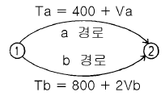
- Va=800, Vb=200
- Va=700, Vb=300
- Va=500, Vb=500
- Va=400, Vb=600
(정답률: 알수없음)
18. 다음에 열거한 지역간 교통수단중 최종 목적지로의 접근성(accessibility)이 가장 우수한 교통수단은?
- 고속버스
- 철도
- 자가용 승용차
- 비행기
(정답률: 80%)
19. 버스의 통행을 우선시키는 방법중 가장 종합적이고 적극적인 방법은 무엇인가?
- 버스전용도로제
- 버스전용차로제
- 버스 bay설치
- 버스우선신호제
(정답률: 90%)
20. 교통수단 선택시 로짓 (Logit) 모형을 이용하여 경전철, 버스, 지하철의 효용함수값을 다음과 같이 구했다. 경전철의 수단 선택확률을 구하면?
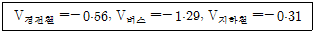
- 0.3500
- 0.3615
- 0.2593
- 0.2500
(정답률: 알수없음)
2과목: 교통공학
21. 자동차가 어떤 구간을 주행하는데 소요된 시간(정지시간 포함하지 않음)과 그 구간의 거리로 부터 구한 속도로서 교통용량등의 해석에 이용되는 속도는?
- 구간속도
- 지점속도
- 주행속도
- 운전속도
(정답률: 80%)
22. 이동차량법(moving vehicle method)에 의한 한 도로의 일방향의 통행시간조사에서 조사차량의 평균통행시간은 3.5분 이었다. 조사중 평균 2대의 차량이 조사차량을 추월하였으며 조사차량이 평균 1.5대의 차량을 추월하였다. 조사방향의 교통량이 1,200대/시간일 때 이 방향에서의 전차량의 평균 통행시간은?
- 3.42분
- 3.48분
- 3.52분
- 3.58분
(정답률: 알수없음)
23. 다음 중 바른 관계식은? (단,
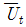
: 시간평균속도,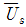
: 공간평균속도,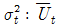
의분산,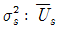
의 분산이다.)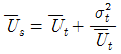
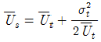
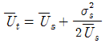
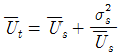
(정답률: 90%)
24. 다음 중 차량속도 조사시 유의사항에 해당하지 않는 것은?
- 모든 표본은 임의로 추출되어야 한다.
- 운전자에게 조사장비가 노출되지 않도록 한다.
- 차량군에서 마지막으로 주행하는 차량을 표본으로 선정한다.
- 대형차량의 혼입율을 고려하여 대형차량의 표본을 조사한다.
(정답률: 79%)
25. 다음 감지기 중에 도로에 매설하지 않고 사용할 수 있는 감지기는?
- 압력반응감지기
- 감응루프식감지기
- 초음파감지기
- 충격식감지기
(정답률: 알수없음)
26. 그림과 같은 병목흐름에서 도착 및 출발하는 차량수를 누적시킨 시간-차량 누적 곡선에 대한 설명 중 옳지 않은 것은?
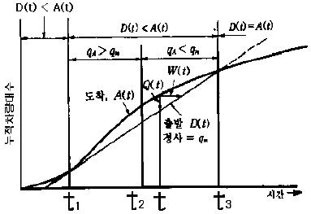
- t1에서 시작하여 t3점까지 대기행렬이 존재한다.
- 총지체도는 A(t)와 D(t) 곡선사이 면적의1/2이다.
- 임의 시간 t에서 대기행렬의 길이는 A(t)-D(t)이다.
- 대기행렬의 최대점은 도착율이 출발율 qm과 같은 t2에서 발생한다.
(정답률: 알수없음)
27. 자료 수집결과 도로상 교통류의 속도(V)와 밀도(k)의 관계가 v=50-0.25k로 밝혀졌다면 혼잡밀도(jam density)는 얼마인가? (단위 : V=㎞/시, k=대/㎞)
- 200대/㎞
- 2500대/㎞
- 100대/㎞
- 1250대/㎞
(정답률: 알수없음)
28. 정지시거의 산출에서 고려되는 운전자의 눈과 장애물의 높이는?
- 차로위 1.5m 눈높이에서 차로중심선위 1.0m물체 높이가 보이는 직선거리
- 차로위 1.2m 눈높이에서 차로중심선위 10cm물체 높이가 보이는 직선거리
- 차로위 1.0m 눈높이에서 차로중심선위 15cm물체 높이가 보이는 직선거리
- 차로위 1.5m 눈높이에서 차로중심선위 10cm물체 높이가 보이는 직선거리
(정답률: 알수없음)
29. 교통류의 속도-밀도 모형 중에서 그린버그(Greenberg)가 개발한 모형으로 최대밀도를 정확히 산출할 수 있고 조사자료와 대체로 일치하지만 밀도가 낮은 부분에서 속도가 부정확해지는 단점이 있는 모형은?
- 로그모형
- 직선모형
- 지수모형
- 2단계 직선모형
(정답률: 알수없음)
30. Webster의 최적신호주기 산출공식에 포함되지 않는 것은?
- 손실시간(Lost Time)
- 포화교통량
- 접근로 교통량
- 서비스 수준
(정답률: 알수없음)
31. 차량의 속도가 40km/h이고 교차로 폭이 20m인 도로에서 적정황색시간을 구하면? (단, 차량의 감속도는 4.5m/sec2, 차량의 길이는 5m, 운전자 반응시간은 1초)
- 4.2초
- 4.5초
- 4.8초
- 5.0초
(정답률: 알수없음)
32. 속도와 밀도의 직선형 관계식을 사용할 때, 최대교통유율 qm을 나타낸 식으로 옳은 것은? (단, uf : 자유속도, kJ : 혼잡밀도, Km : 임계밀도, um : 최대 교통량일 때의 속도)
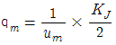
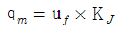
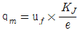
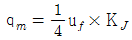
(정답률: 알수없음)
33. 비교적 안정된 흐름이지만 교통량이 조금만 증가해도 서비스 수준이 현저하게 떨어지며 교통류내에서의 이동은 큰 제약을 받고 사소한 사고가 발생해도 그 영향을 흡수할 차간간격이 없기 때문에 상당히 긴 대기 행렬을 형성하는 고속도로 기본 구간의 서비스 수준은?
- C
- D
- E
- F
(정답률: 알수없음)
34. 5분동안 어떤 한 지점을 통과하는 차량의 속도를 측정한 결과가 다음 표와 같을 때 공간 평균 속도는?
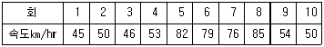
- 44km/hr
- 48km/hr
- 54km/hr
- 58km/hr
(정답률: 알수없음)
35. 신호 교차로에서 사용되는 효과척도(MOE)는?
- v/c 비
- 평균통행속도
- 여유용량
- 평균제어지체
(정답률: 알수없음)
36. 차두시간은 최소안전 차두시간보다 작을 수가 없다는 논리로 차두 시간의 분포모형을 산정하는데 적합한 확률모형은?
- Binomial 분포
- Negative Exponential 분포
- Shifted Negative Exponential 분포
- Poisson 분포
(정답률: 알수없음)
37. 두 교차로간을 주행하는 차량평균속도가 30km/h이고 옵셋 10초, 두교차로의 황색 신호시간이 3초일 때 두 교차로간의 간격은? (단, 완전한 연속진행이 보장되는 경우)
- 58m
- 83m
- 108m
- 210m
(정답률: 알수없음)
38. 도로교통용량 산정의 변수중 중(重)차량 보정계수공식으로 맞는 것은? (단, Pt : 화물차의 구성비율, Pb : 버스의 구성비율, Et : 화물차의 승용차 환산계수, Eb : 버스의 승용차 환산계수)
- 1/[1+Pt(Et-1)+Pb(Eb-1)]
- 1/[Pt(Et-1)+Pb(Eb-1)]
- 1/[(Et-1)+(Eb-1)]
- 1/[1+Pt(Et-1)+1+Pb(Eb-1)]
(정답률: 알수없음)
39. 노선구간의 연장이 15km인 대중교통노선의 필요한 차량규모를 알아보려고 한다. 시험운행 결과 평균 운행속도가 20km/h, 배차간격이 6분으로 판단되었다면 이 노선의 필요한 차량규모는 얼마인가?
- 10대
- 15대
- 20대
- 25대
(정답률: 알수없음)
40. 차량의 정지거리는 공주거리와 제동거리로 구성된다. 제동거리에 대한 설명으로 틀린 것은?
- 비가 오는 날은 길어 진다.
- 노면의 상태, 타이어의 상태와 관계가 있다.
- 노면의 스키드마크를 측정하여 구할 수도 있다.
- 반응속도가 빠른 사람은 제동거리를 줄일 수 있다.
(정답률: 알수없음)
3과목: 교통시설
41. 설계속도는 도로의 기하구조를 검토하고 결정하는데 기본이 되는 속도이다. 다음에서 설계속도와 직접적인 관련이 없는 것은 어느 것인가?
- 곡선반경
- 시거
- 편경사
- 횡단경사
(정답률: 알수없음)
42. 다음 중 현재 설치하고 있는 중앙분리대의 종류로 옳지 않은 것은?
- 횡단형
- 종단형
- 억제형
- 방책형
(정답률: 알수없음)
43. 다음 중 길어깨(갓길)설치의 주된 목적이 아닌 것은?
- 고장차를 대피한다.
- 차도를 규정된 폭원으로 보전한다.
- 노상시설을 설치한다.
- 보행교통을 유치한다.
(정답률: 알수없음)
44. 노외주차장 설치기준이 아닌 것은?
- 통행로의 폭
- 주차 각도
- 진입로의 수
- 통행로의 길이
(정답률: 알수없음)
45. 평면교차로에 있어서 도류화 설치목적이 아닌 것은?
- 보행자 안전지대를 설치하기 위한 장소 제공
- 교통통제 설비를 잘보이는 곳에 설치하기 위한 장소 제공
- 포장면적을 넓힘으로써 차량간 상충면적을 줄인다.
- 차량의 속도를 원하는 정도로 통제한다.
(정답률: 알수없음)
46. 고속도로의 경우 우측 길어깨(갓길)의 폭원이 얼마 미만일 경우 비상 주차대를 설치해야 하는가?
- 2.0m
- 2.5m
- 3.0m
- 3.5m
(정답률: 알수없음)
47. 도시지역 고속도로의 중앙 분리대 설치시 최소 폭은?
- 1.5m
- 2.0m
- 2.5m
- 3.0m
(정답률: 알수없음)
48. 세미트레일러의 최소 회전반경은?
- 12m
- 10m
- 8m
- 6m
(정답률: 92%)
49. 도로평면 선형을 직선 - 완화곡선 - 원곡선부로 하고, 완화곡선을 클로소이드 곡선으로 적용할 경우, 완화곡선의 길이가 100m, 원곡선부의 반경이 400m 라면 직선부와의 교점에서 완화곡선상의 50m 떨어진 지점의 곡선반경은?
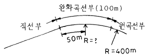
- 800m
- 700m
- 633m
- 600m
(정답률: 알수없음)
50. 주차방식중 각도식주차의 특징이 아닌 것은?
- 평행식에 비해 주차대수가 많음
- 주차시 사고발생 가능성이 높음
- 저속차량이 많은 부도로에 적합함
- 주차시 소요되는 시간이 단축됨
(정답률: 알수없음)
51. 입체교차의 형식 중 불완전 입체교차인 것은?
- 크로바형
- 다이아몬드형
- 직결형
- 트럼펫형
(정답률: 알수없음)
52. 간선도로에 기능이 낮은 집산도로 이하의 도로가 좁은 간격으로 접속하는 경우 간선도로의 기능을 저하시키지 않도록 유출입 교통을 집산시켜 접속되도록 하는 도로는?
- 보도
- 측도
- 자전거 도로
- 농로
(정답률: 알수없음)
53. 다음 중 주차수요 추정방법으로 적합하지 않은 것은?
- 과거추세연장법
- 외삽법
- 주차 원단위법
- 자동차 기· 종점 조사에 의한 방법
(정답률: 알수없음)
54. 지방지역 고속도로의 평지 및 산지의 설계속도는?
- 평지 80km/h, 산지 60km/h
- 평지 100km/h, 산지 80km/h
- 평지 120km/h, 산지 100km/h
- 평지 140km/h, 산지 120km/h
(정답률: 알수없음)
55. 다음 그림은 도로의 기능과 이동성 및 접근성과의 관계를 나타낸 것이다. ②번에 속하는 도로는?
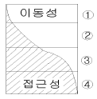
- 고속도로
- 집산도로
- 간선도로
- 국지도로
(정답률: 알수없음)
56. 다음 교차로의 설계원리 중 타당하지 않는 것은?
- 상충점을 집결시킨다.
- 상대속도를 줄인다.
- 설계와 교통통제를 조화시킨다.
- 회전교통 경로를 마련한다.
(정답률: 92%)
57. 화물터미널에서 지역및 장거리 화물의 하역장소로 적합한 곳은?
- 터미널 건물의 양단
- 출입구 가까운 곳
- 터미널 건물의 중앙부분
- 건물내부
(정답률: 알수없음)
58. 도로가 철도와 평면 교차시 교차하는 도로의 설계시 유의해야 할 사항이 아닌 것은?
- 교차각은 45° 이상으로 한다.
- 건널목의 양측에서 각각 30m까지의 구간은 건널목을 포함하여 직선으로 한다.
- 가시구간의 최소길이는 철도 차량 최고속도에 따라 110m ∼ 350m 로 한다.
- 도로와 철도의 교차시 차도 종단경사는 5% 이하로 한다.
(정답률: 알수없음)
59. 공동구의 설치효과에 대한 설명중 옳지 않은 것은?
- 각종 지하매설물 점용공사에 의한 반복된 노면굴착이 배제되고 따라서 원활한 교통소통과 교통사고 감소에 기여한다.
- 반복된 노면 굴착 및 복구에 따른 경제적 손해와 노면의 지지력 손상을 배제할수 있다.
- 각종 지하 매설물이 정비되고 합리적인 이용을 기대할 수 있으며, 따라서 점용단면에 대한 수용용량이 감소한다.
- 노상의 점용물건이 지하에 수용되어 도로교통 및 도시 미관에 유리하다.
(정답률: 알수없음)
60. 콘크리트 포장의 특징이라고 할 수 없는 것은?
- 아스팔트 포장 보다 일반적으로 초기 건설비는 고가(高價)이다.
- 절토부와 성토부의 연결지점 즉 부등침하(不等沈下)구간에 적합하다.
- 양생기간 (養生期間)이 길다.
- 균질(均質)의 보조기층(補助期層)구간에 적합하다.
(정답률: 알수없음)
4과목: 도시계획개론
61. 도시공원이라 하면 도시공원법에서 그 유형을 언급하고 있는데, 다음의 항목중 도시공원법상 공원의 유형을 올바르게 분류하고 있는 것은?
- 도시자연공원, 보통공원, 유아공원, 운동공원, 근린공원
- 보통공원, 근린공원, 도로공원, 유아공원, 묘지공원
- 도시자연공원, 근린공원, 어린이공원, 묘지공원, 체육공원
- 근린공원, 어린이공원, 도로공원, 체육공원, 보통공원
(정답률: 알수없음)
62. 토지이용과 교통간의 관계를 요약한 내용으로 잘못된 것은?
- 토지이용과 교통과의 관계는 상호의존적으로 작용하며 순환적인 관계를 가진다.
- 토지이용체계는 동태적으로 변하기 때문에 교통의 토지이용에 대한 영향을 떼내어 관찰하기가 곤란하다.
- 어느 도시가 급속하게 성장할 때는 교통시설이 도시내 어디에 설치되는 가에 따라 그 도시의 성장방향이 결정될 정도로 중요하다.
- 활동의 공간적 입지는 활동패턴과 통행패턴에 영향을 미치지만, 교통체계에는 그다지 영향을 미치지 않는다.
(정답률: 알수없음)
63. 지구단위계획에 포함되어야 할 계획내용은 용도지역 및 지구의 세분 및 변경을 비롯하여 기반시설의 배치 등 여러 가지가 있다. 다음 중 지구단위계획 수립시 포함시켜야 할 내용이 아닌 것은?
- 교통처리계획
- 가구· 획지규모와 조성계획
- 건축물배치, 형태, 색채와 건축선
- 인구계획
(정답률: 알수없음)
64. 도시관리계획이란 시· 군 행정구역에 대한 토지용도의 부여, 기반시설의 설치 등에 관한 계획이며 직접적으로 국민에게 영향을 주는 집행적 계획으로서 정기적으로 재정비 하도록 되어 있다. 몇 년마다 그 타당성 여부를 재검토하여 정비하여야 하는가?
- 5년
- 10년
- 15년
- 20년
(정답률: 알수없음)
65. 현재 인구가 50만명인 도시가 있다. 이 도시의 인구 증가율이 5%일때 12년후의 인구를 등차급수법에 의해 산정하면 몇 명이 되는가?
- 150만명
- 120만명
- 100만명
- 80만명
(정답률: 알수없음)
66. 기준년도의 인구와 출생율, 사망율 및 인구이동의 변화요인을 고려하여 장래의 인구를 추정하는 방법은?
- 직선모형(linear growth model)
- 비율적용법(ratio method)
- 로지스틱커브법(logistic curve method)
- 집단생잔법(cohort survival method)
(정답률: 알수없음)
67. 업무/상업, 저소득층 주거, 고소득층 주거 등 3가지 유형으로 구성된 사회에서 외곽지역에서 도심을 연결하는 급행철도투자가 이루어질 경우 지대이론에 따른 변화는?
- 외곽지역 지대 하락
- 도심지역 토지가 상승
- 외곽지역 주택밀도 하락
- 외곽지역 주택가격 상승
(정답률: 알수없음)
68. 다음 중 도시내 도로의 기능상 분류에 해당되지 않는 것은?
- 간선도로
- 이면도로
- 국지도로
- 집산도로
(정답률: 알수없음)
69. 도시계획상 장래 그 도시의 성장 규모를 결정하는 기준이 되며, 물리적 환경의 총체적 규모를 결정하는 기본 척도가 되는 것은?
- 인구
- 상가규모
- 토지
- 교통량
(정답률: 알수없음)
70. 일반주거지역을 1종,2종,3종으로 세분화할 경우, 2종일반주거지역에 해당하는 주거지역의 특성은?
- 단독주택 중심의 양호한 주거환경
- 고층아파트 중심의 주거환경
- 간선도로주변의 교통량이 많은 주거환경
- 연립주택 및 저층아파트의 주거환경
(정답률: 알수없음)
71. 방사환상형 가로망 구조의 장점으로 적당하지 않은 것은?
- 강력한 중심부 형성
- 중심부와의 접근성 양호
- 토지이용이나 건축에 유리
- 다양한 도시구조 창출
(정답률: 알수없음)
72. 주기능이 상업 및 업무시설인 도심부에 있어서 주간선도로와 주간선도로의 간격은 일반적으로 어느 정도가 적절한가?
- 250m 내외
- 500m 내외
- 750m 내외
- 1000m 내외
(정답률: 알수없음)
73. 도시의 발전에 있어서 도심의 생성과 가장 연관성이 높은 용어는?
- 규모의 경제
- 집적경제
- 범위의 경제
- 잠재수요
(정답률: 알수없음)
74. 격자형 가로망의 특징으로 옳지 않은 것은?
- 지형을 무시하는 경향이 있다.
- 통과교통이 생길 우려가 적다.
- 명백하고 분명한 동선 체계이다.
- 정방형, 삼각형의 패턴이 있다.
(정답률: 알수없음)
75. 진화하는 도시(cities in evolution)를 저술 하였으며, 공업도시에서 생기는 문제의 해결을 생물학적 방법으로 설명하고 도시인구, 고용, 생활 등의 조사와 이에 대한 분석으로 과학적인 도시계획 기술을 발전시킬 필요성을 주장한 인물은 다음 중 누구인가?
- Raymond Unwin
- Tony Garnier
- Clarence Stein
- Patrick Geddes
(정답률: 알수없음)
76. 다음 지역 지구에 관한 설명중 옳은 것은?
- 지역은 중복지정이 가능하나 지구는 중복지정이 불가능하다.
- 지역·지구 모두 중복지정이 가능하다.
- 지역은 중복지정이 불가하나 지구는 중복지정이 가능하다.
- 지역·지구 모두 중복지정이 불가하다.
(정답률: 알수없음)
77. 보행자 전용도로의 필요성이 제기된 원인으로서 적당하지 않은 것은?
- 주거단지의 대규모화
- 안전성· 쾌적성 확보
- 주차공간의 대형화
- 외부 생활공간의 체계화
(정답률: 알수없음)
78. 동양형 도시의 특징이 아닌 것은?
- 자연 발생적 도시형성이다.
- 통치자 중심의 인위적 도시건설이다.
- 신분의 차이에 따라 거주지는 달리했다.
- 도심부가 대부분 격자형 가로망이다.
(정답률: 알수없음)
79. 도시발전과 토지이용 패턴의 유형에서 동심원 이론을 처음 주장한 사람은 누구인가?
- H.Hoyt
- C.D.Harris
- E.W.Burgess
- E.L.Ullman
(정답률: 알수없음)
80. 도시계획시설사업의 단계별 집행계획은 일정기간을 두고 1단계와 2단계로 구분하여 수립하도록 되어 있다. 그 기간에 해당되는 것은?
- 1년
- 2년
- 3년
- 5년
(정답률: 알수없음)
5과목: 교통관계법규
81. 다음 중 노상주차장을 설치하기에 적절한 지역은?
- 주간선도로
- 너비 5m 도로
- 종단구배가 4%이하인 도로
- 고가도로
(정답률: 알수없음)
82. 도로의 구조에 대한 손궤, 미관의 보존 또는 교통에 대한 위험을 방지하기 위하여 도로의 경계선으로 부터 몇 m를 초과하지 아니하는 범위안에서 접도구역으로 지정할 수 있는가?
- 20m
- 30m
- 40m
- 50m
(정답률: 알수없음)
83. 도시교통정비기본계획 수립을 위하여 실시하는 기초조사 내용이 아닌 것은?
- 인구 등 사회· 경제지표현황 및 전망
- 자동차보유현황 및 증가추세
- 간선도로 및 교차로의 교통량 현황 및 변화추이
- 주차장현황과 이용특성추이
(정답률: 알수없음)
84. 도로의 횡단면을 구성하는 요소들에 대한 제원으로 바르게 제시된 것은?
- 지방지역 고속도로 차로의 최소폭 : 3.5m
도시지역 일반도로 중앙분리대 최소폭 : 1.0m
도시지역 고속도로 오른쪽 길어깨의 최소폭 : 2.0m
도시지역 간선도로 보도의 최소폭 : 3.0m - 지방지역 고속도로 차로의 최소폭 : 3.0m
도시지역 일반도로 중앙분리대 최소폭 : 2.0m
도시지역 고속도로 오른쪽 길어깨의 최소폭 : 1.5m
도시지역 간선도로 보도의 최소폭 : 2.0m - 지방지역 고속도로 차로의 최소폭 : 3.5m
도시지역 일반도로 중앙분리대 최소폭 : 1.0m
도시지역 고속도로 오른쪽 길어깨의 최소폭 : 1.5m
도시지역 간선도로 보도의 최소폭 : 2.0m - 지방지역 고속도로 차로의 최소폭 : 3.0m
도시지역 일반도로 중앙분리대 최소폭 : 1.5m
도시지역 고속도로 오른쪽 길어깨의 최소폭 : 1.0m
도시지역 간선도로 보도의 최소폭 : 3.0m
(정답률: 알수없음)
85. 다음 중 교통안전법에 의한 권한의 일부를 위임 받을 수 없는 자는?
- 도지사
- 광역시장
- 서울특별시장
- 지방경찰청장
(정답률: 알수없음)
86. 노상주차장에서의 설비기준 중 주차대수규모가 최소 몇 대 이상인 경우 장애인 주차면수를 1면이상 설치하여야 하는가?
- 10
- 20
- 25
- 50
(정답률: 60%)
87. 광역도시계획의 승인을 얻고자 할때 광역도시계획안에 첨부할 서류로 부적합한 것은?
- 기초조사 결과
- 공청회개최 결과
- 관계 시도의 의회와 관계 시장 또는 군수의 의견청취결과
- 광역교통위원회의 자문을 거친 결과
(정답률: 알수없음)
88. 다음의 위원회 중에서 국무총리가 위원장인 위원회는?
- 중앙도시교통 정책 심의위원회
- 중앙도시계획 위원회
- 교통안전정책 심의위원회
- 교통안전정책 조정위원회
(정답률: 알수없음)
89. 주차전용건축물에 기계장치를 이용할 경우 주차장의 연면적 산정에 제외되는 부분은?
- 관리사무소
- 부속실
- 기계실
- 자동차 주차부분
(정답률: 알수없음)
90. 다음중 국도에 대한 도로의 관리청은?
- 도지사
- 건설교통부 장관
- 노선을 인정한 행정청
- 경찰청
(정답률: 알수없음)
91. 다음중 도로법상의 도로부속물에 속하지 않는 것은?
- 도로표식
- 이정표
- 중앙분리대
- 가로수
(정답률: 40%)
92. 도시교통정비지역의 적용대상은 상주인구 얼마 이상의 도시인가? (단, 도농복합형태의 시의 읍, 면 지역은 제외)
- 10만
- 30만
- 50만
- 70만
(정답률: 알수없음)
93. 다음 중 정차가 금지되는 곳이 아닌 것은?
- 교차로·횡단보도 또는 건널목
- 소방용 방화물통으로부터 5m 이내의 곳
- 교차로의 가장자리로부터 5m 이내의 곳
- 안전지대의 사방으로부터 각각 10m 이내의 곳
(정답률: 알수없음)
94. 다음 중 도로교통법상의 정차에 해당하는 것은?
- 화물을 부리기 위하여 5분이상 정지한 상태
- 차가 5분을 초과하지 아니하고 정지하는 것으로서 주차외의 정지한 상태
- 운전자가 시동을 끄지 않은 상태에서 잠시 차량을 떠난 상태
- 차량고장으로 5분이상 정지한 상태
(정답률: 알수없음)
95. 다음 중 도시지역의 도로유형에 따른 설계속도를 바르게 설명한 것은?
- 고속도로 : 120㎞/h
- 주간선도로 : 100㎞/h
- 보조간선도로 : 60㎞/h
- 국지도로 : 50㎞/h
(정답률: 알수없음)
96. 서울특별시장이 버스의 원활한 소통을 위하여 특히 필요한 때에는 누구와 협의하여 도로에 버스전용 차로를 설치할 수 있는가?
- 지방경찰청장
- 건설교통부장관
- 구청장
- 파출소장
(정답률: 알수없음)
97. 도로법에서 정한 도로 등급의 순서로 옳은 것은?
- 고속국도 - 일반국도 - 지방도 - 특별시도
- 고속국도 - 일반국도 - 특별시도 - 지방도
- 고속국도 - 지방도 - 특별시도 - 일반국도
- 고속국도 - 특별시도 - 일반국도 - 지방도
(정답률: 알수없음)
98. 도로교통법상 도로에 대한 설명으로 가장 적절한 것은?
- 광장, 해변, 공지도 도로에 해당된다.
- 유료도로법에 의한 유료도로는 제외된다.
- 일반도로와 자동차전용도로 및 고속도로만을 말한다.
- 출입이 제외된 학교운동장, 유료주차장도 도로로 간주된다.
(정답률: 알수없음)
99. 무질서한 시가화를 방지하고 도시의 계획적, 단계적 개발을 도모하기 위하여 일정기간 시가화를 유보하기 위해 지정되는 구역은?
- 특정시설제한구역
- 시가화조정구역
- 개발제한구역
- 상세계획구역
(정답률: 알수없음)
100. 도로가 철도등과 동일한 평면내에서 교차하는 경우에는 그 교차하는 도로는 아래에 정하는 구조로 한다. 틀린 것은?
- 건널목의 양측에서 각각 30m 이내의 구간은 직선으로 한다.
- 건널목의 양측에서 각각 30m 이내의 구간 차도의 종단구배는 3% 이하로 한다.
- 철도와의 교차각은 30도 이상으로 한다.
- 철도를 횡단하여 교량을 가설하는 경우에는 철도의 확장 및 보수와 제설 등을 위한 충분한 경간길이를 확보하여야 한다.
(정답률: 60%)
6과목: 교통안전
101. 다음 노변방호책의 설계시 방호책의 요건에 맞지 않는 것은?
- 차량을 관통하지 않아야 한다.
- 차량이 걸려 전도하지 않아야 한다.
- 차량이 튀어오르게 하지 않아야 한다.
- 차량 충격시의 감속도는 중력가속도의 12배 보다 작지 않아야 한다.
(정답률: 92%)
102. 다음 그림에서 보는바와 같이 차량이 평탄한 길을 달리다가 10m 높이 아래로 추락하였다. 이때 추락한 수평거리는 30m 이었다. 이 차량의 추락직전의 수평방향의 속도는 얼마인가?
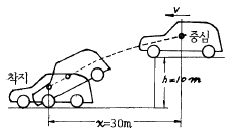
- 11 m/sec
- 21 m/sec
- 31 m/sec
- 41 m/sec
(정답률: 알수없음)
103. 다음 사항중 교통사고 발생을 능동적으로 억제시키는 조치는?
- 노면(路面) 마찰계수 증대조치
- 위험 지역에 가드 레일(Guard Rail)설치
- 충격 흡수용 범퍼
- 운전자용 에어 백(Air Bag)
(정답률: 알수없음)
104. OECD에서 교통안전의 접근방법으로 "모든 사고에 있어 특정사건은 부분적으로 그에 앞선 행동 또는 환경의 결과이다." 라는 전제하에 도로외상을 유발하는 과정을 통하여 결정적인 선 또는 경로를 찾는 방법으로 개발한 기법은?
- 다원인 동적체계 접근
- 다원인 정적체계 접근
- 다원인 기회현상 접근
- 단일원인 사고경향 접근
(정답률: 알수없음)
1⑤. 사고충돌도의 다음 그림이 뜻하는 것은?
- 3월 10일 오전 3시 비오고 습윤상태 도로에서의 추돌사고
- 3월 10일 오후 3시 맑고 건조한 상태 도로에서의 추돌사고
- 3월 10일 오전 3시 비오고 습윤 상태 도로에서의 측면충돌사고
- 3월 10일 오전 3시 눈오고 빙판 상태 도로에서의 직각충돌사고
(정답률: 알수없음)
106. 운전면허소지자 20,000인의 지난 5년간 사고 경력을 조사하였더니 전체 교통사고수는 6,000건이었다. 지난 5년간 3회 이상 교통사고를 일으킨 사람을 교통사고상습자로 관리하고자 할 때 교통사고상습자로 관리해야 할 사람은 몇 명인가? (단, 소수 4째자리까지 계산)
- 53인
- 62인
- 74인
- 85인
(정답률: 알수없음)
107. 35km의 도로구간에서 1년동안 50건의 교통사고가 발생하였다. 조사 결과 일평균교통량이 6000대 이고 총사고 건수 중 5%가 치명적 사고이었다면 차량 1억대·km당 치명적사고 발생률은 얼마인가?
- 32.6
- 24.6
- 2.46
- 3.26
(정답률: 알수없음)
108. 사고자료의 공학적인 이용을 위해서는 사고보고서를 어떻게 정리하는 것이 가장 타당한가?
- 사고발생 일자별로
- 사고발생 지점별로
- 사고발생 차종별로
- 사고발생 운전자별로
(정답률: 82%)
109. 음주운전은 교통사고의 매우 심각한 문제이다. 알코올 영향의 감소는 단지 인체가 소모함으로써 가능한데 일반적으로 소모되는 비율로 가장 적절한 것은?
- 0.0⑤ ∼ 0.010 %/hr
- 0.010 ∼ 0.015 %/hr
- 0.015 ∼ 0.020 %/hr
- 0.020 ∼ 0.025 %/hr
(정답률: 알수없음)
110. 교통사고 발생요소를 크게 3가지로 대별해 볼때 가장 타당한 것은?
- 인적요소, 차량요소, 환경요소
- 인적요소, 차량요소, 시설요소
- 인적요소, 정비요소, 시설요소
- 인적요소, 정비요소, 도로요소
(정답률: 알수없음)
111. 스미드(R.G.Smeed)는 교통사고 사망자 수를 나타내는데 변수들을 이용하여 통계적 모델로 작성하였다. 이때 사용한 변수는?
- 인구수, 자동차 보유수
- 자동차 보유수, 면허소지자 수
- 인구수, 국민 총 생산
- 도로길이, 화물유통량
(정답률: 알수없음)
112. 교통안전대책을 수립하는데 있어 안전대책이 이동성을 저해하는 것으로 인식되면서 어려움을 겪어왔는데 안전과 이동성의 상충의 예에 해당되지 않는 것은?
- 속도제한
- 이륜차 헬멧착용
- 운전면허의 연령제한
- 능동적인 탑승자 보호장비(에어백)
(정답률: 알수없음)
113. 교통안전을 위한 3E 대책중 공학(Engineering)과 관련된 대책이 아닌 것은?
- 안전한 도로의 설계
- 사고다발지점의 개선
- 차량의 안전설계
- 속도제한의 실시
(정답률: 90%)
114. 운전자의 정보처리과정에서 첫 번째 단계는?
- 인식
- 의사결정
- 반응
- 주의
(정답률: 알수없음)
115. 주차와 교통사고와의 상관관계에 대한 설명 중 맞는 것은?
- 노상주차를 금지하면 사고율이 높아진다.
- 각도주차보다 평행주차의 사고율이 낮다.
- 교차로 부근의 주차로 인한 사고위험이 낮다.
- 속도와 교통량은 주차사고와 관련이 없다.
(정답률: 82%)
116. 교통대응방식의 연동화된 신호등을 설치하여 감소시킬 수 있는 사고는?
- 추돌사고
- 직각충돌사고
- 정면충돌사고
- 좌회전충돌사고
(정답률: 알수없음)
117. 주행하는 차량의 운동량을 차량의 경로에 위치한 소모용 재료의 질량으로 전이시키는 충격완화시설은?
- 관성방호책
- 하이드라이 셀 샌드위치
- 하이드로 셀 샌드위치
- 압축유형 방호책
(정답률: 알수없음)
118. 사고 연구를 위한 구간 설정시 지방부에서 권장되는 표준 구간장은?
- 1㎞
- 2㎞
- 3㎞
- 4㎞
(정답률: 84%)
119. 사고지점도에 대한 설명중 적절치 않는 것은?
- 사고가 집중적으로 발생하는 지점에 대한 신속한 시각적 색인을 제공한다.
- 지도상에 핀, 색종이를 붙이거나 표시를 하여 사고지점을 나타내는 것이 가장 일반적이다.
- 상이한 모양, 크기 또는 색채가 사고의 유형이나 정도를 나타내는데 사용된다.
- 다수의 희생자를 포함하는 대형사고를 강조하기 위해 희생자수를 나타내는 것이 일반적이다.
(정답률: 90%)
120. 노면의 배수를 촉진하기 위해 제공하는 아스팔트 및 시멘트 포장도로의 횡단경사는 어느 범위인가?
- 1% 이하
- 1% ∼ 1.5%
- 1.5% ∼ 2.0%
- 2.0% ∼ 3.0%
(정답률: 알수없음)